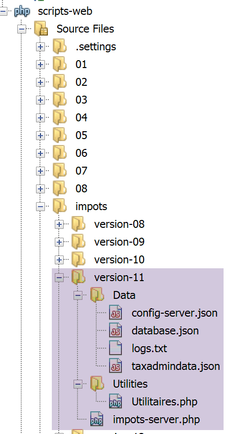
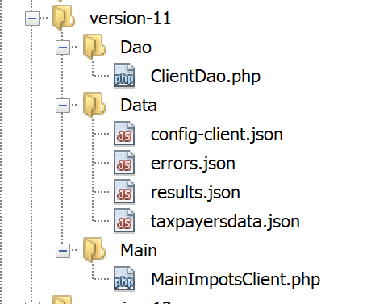
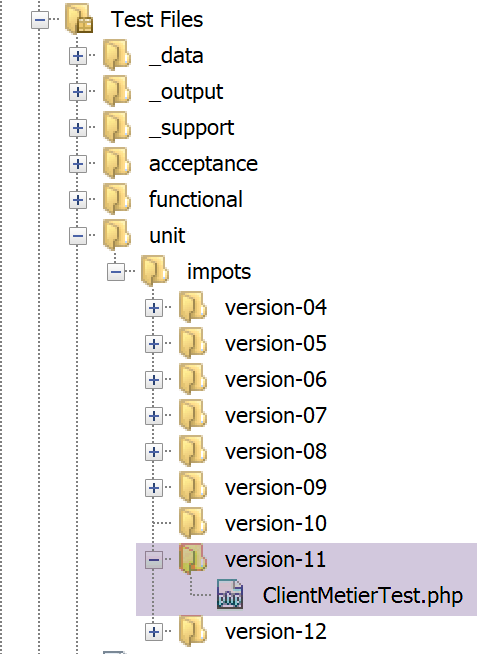

22. Exercice d’application – version 11
Il est encore fréquent que des services web envoient leur réponse sous la forme d’un flux XML plutôt que d’un flux jSON :
- le flux jSON est plus léger mais il faut un mode d’emploi pour le comprendre ;
- le flux XML est plus verbeux mais il est autodocumenté. Sa compréhension est immédiate ;
Nous modifions la version 11 client / serveur pour que le serveur envoie désormais un flux XML comme réponse à ses clients :

22.1. Le serveur

Cette architecture sera implémentée par les scripts suivants :

22.1.1. La classe [Utilitaires]
Nous reprenons la classe [Utilitaires] utilisée dès la version 03 (cf paragraphe lien) :
<?php
// espace de noms
namespace Application;
// une classe de fonctions utilitaires
abstract class Utilitaires {
public static function cutNewLinechar(string $ligne): string {
…
}
// from https://stackoverflow.com/questions/1397036/how-to-convert-array-to-simplexml
public static function getXmlForArrayOfAttributes(array $arrayOfAttributes,
\SimpleXmlElement &$node): void {
// on scanne les attributs du tableau
foreach ($arrayOfAttributes as $attribute => $value) {
// l'attribut est-il numérique ?
if (is_numeric($attribute)) {
// cas de l'index de tableau (mais aussi autres cas)
$attribute = 'i' . $attribute;
}
// $value est-il un tableau ?
if (is_array($value)) {
// on va explorer le tableau [$value] à son tour
// on ajoute un nœud au graphe XML
$subnode = $node->addChild($attribute);
// appel récursif pour explorer le tableau [$value]
Utilitaires::getXmlForArrayOfAttributes($value, $subnode);
} else {
// on ajoute le nœud au graphe XML
$node->addChild("$attribute", htmlspecialchars("$value"));
}
}
}
}
Commentaires
- lignes 14-36 : nous introduisons la méthode statique [getXmlForArrayOfAttributes] qui rend la chaîne XML d’un tableau [arrayOfAttributes] passé en paramètre. Le second paramètre est la référence d’un nœud d’un graphe XML, de type [SimpleXmlElement]. Après exécution, ce nœud contient le graphe XML du tableau [arrayOfAttributes] ;
Nous écrivons le test [testXml.php] suivant :

<?php
// dépendance
require __DIR__ . "/Utilitaires.php";
// tableau associatif
$array = ["nom" => "amédée", "prénom" => "sylvain", "âge" => 40,
"enfants" => [["nom" => "amédée", "prénom" => "béatrice", "âge" => 6],
["nom" => "amédée", "prénom" => "bertrand", "âge" => 4]]];
// xml
header("Content-Type: application/xml");
$node = new \SimpleXMLElement("<?xml version='1.0' encoding='UTF-8'?><root></root>");
\Application\Utilitaires::getXmlForArrayOfAttributes($array, $node);
print $node->asXML();
Lorsqu’on exécute ce script [2], nous obtenons la chose suivante dans un navigateur Chrome :

22.1.2. Le script serveur
Le script serveur [impots-server.php] doit être modifié ainsi que son fichier de configuration [config-server.json] :
{
"rootDirectory": "C:/myprograms/laragon-lite/www/php7/scripts-web/impots/version-11",
"databaseFilename": "Data/database.json",
"relativeDependencies": [
"/../version-08/Entities/BaseEntity.php",
"/../version-08/Entities/ExceptionImpots.php",
"/../version-08/Entities/TaxAdminData.php",
"/../version-08/Entities/Database.php",
"/../version-08/Dao/InterfaceServerDao.php",
"/../version-08/Dao/ServerDao.php",
"/../version-09/Dao/ServerDaoWithSession.php",
"/../version-08/Métier/InterfaceServerMetier.php",
"/../version-08/Métier/ServerMetier.php",
"/../version-09/Utilities/Logger.php",
"/../version-09/Utilities/SendAdminMail.php",
"/Utilities/Utilitaires.php"
],
"absoluteDependencies": [
"C:/myprograms/laragon-lite/www/vendor/autoload.php",
"C:/myprograms/laragon-lite/www/vendor/predis/predis/autoload.php"
],
"users": [
{
"login": "admin",
"passwd": "admin"
}
],
"adminMail": {
"smtp-server": "localhost",
"smtp-port": "25",
"from": "guest@localhost",
"to": "guest@localhost",
"subject": "plantage du serveur de calcul d'impôts",
"tls": "FALSE",
"attachments": []
},
"logsFilename": "Data/logs.txt"
}
Commentaires
- la racine du projet est désormais le dossier de la version 11 ;
- ligne 16 : on inclut la nouvelle classe [Utilitaires] ;
Les modifications du script serveur sont les suivantes :
<?php
// respect strict des types déclarés des paramètres de foctions
declare (strict_types=1);
// espace de noms
namespace Application;
…
// préparation de la réponse JSON du serveur
$response = new Response();
$response->headers->set("content-type", "application/xml");
$response->setCharset("utf-8");
…
// création de la couche [métier]
$métier = new ServerMetier($dao);
// calcul de l'impôt
$result = $métier->calculerImpot($marié, (int) $enfants, (int) $salaire);
// on rend la réponse
sendResponse($response, $result, Response::HTTP_OK, [], $logger, $redis);
// fin
exit;
function doInternalServerError(string $message, Response $response, array $infos,
…
}
// fonction d'envoi de la réponse HTTP au client
function sendResponse(Response $response, array $result, int $statusCode,
array $headers, Logger $logger = NULL, \Predis\Client $predisClient = NULL) {
// $response : réponse HTTP
// $result : tableau des résultats
// $statusCode : statut HTTP de la réponse
// $headers : entêtes HTTP à mettre dans la réponse
// $logger : le logueur de l'application
// $predisClient : un client [predis]
//
// statut HTTTP
$response->setStatusCode($statusCode);
// body XML
$node = new \SimpleXMLElement("<?xml version='1.0' encoding='UTF-8'?><réponse></réponse>");
Utilitaires::getXmlForArrayOfAttributes($result, $node);
$response->setContent($node->asXML());
// headers
$response->headers->add($headers);
// envoi
$response->send();
// log
if ($logger != NULL) {
// log en jSON
$log = \json_encode(["réponse" => $result], JSON_UNESCAPED_UNICODE);
$logger->write("$log\n");
$logger->close();
}
// fermeture de la connexion [redis]
if ($predisClient != NULL) {
$predisClient->disconnect();
}
}
Commentaires
- ligne 12 : on indique que la réponse est de type [application/xml] ;
- lignes 29-59 : la réponse du serveur est désormais du XML ;
- ligne 41 : création du nœud racine [<réponse></réponse>] du graphe XML ;
- ligne 42 : ce graphe est complété avec le graphe XML du tableau [$result] des résultats à envoyer au client ;
- ligne 43 : le graphe XML est converti en chaîne XML pour envoi au client ;
Test
Directement dans un navigateur Chrome, on tape l’URL [http://localhost/php7/scripts-web/impots/version-11/impots-server.php?mari%C3%A9=oui&enfants=2&salaire=60000]. On obtient le résultat suivant [1] dans un navigateur Chrome :

22.2. Le client
Nous nous intéressons maintenant à la partie client de l’application.

Cette architecture sera implémentée par les scripts suivants :

Dans la nouvelle version, seuls changent :
- le fichier de configuration [config-client.json] ;
- la couche [dao] du client ;
Le fichier de configuration [config-client.json] devient le suivant :
{
"rootDirectory": "C:/Data/st-2019/dev/php7/poly/scripts-console/impots/version-11",
"taxPayersDataFileName": "Data/taxpayersdata.json",
"resultsFileName": "Data/results.json",
"errorsFileName": "Data/errors.json",
"dependencies": [
"/../version-08/Entities/BaseEntity.php",
"/../version-08/Entities/TaxPayerData.php",
"/../version-08/Entities/ExceptionImpots.php",
"/../version-08/Utilities/Utilitaires.php",
"/../version-08/Dao/InterfaceClientDao.php",
"/../version-08/Dao/TraitDao.php",
"/Dao/ClientDao.php",
"/../version-08/Métier/InterfaceClientMetier.php",
"/../version-08/Métier/ClientMetier.php"
],
"absoluteDependencies": [
"C:/myprograms/laragon-lite/www/vendor/autoload.php"
],
"user": {
"login": "admin",
"passwd": "admin"
},
"urlServer": "https://localhost:443/php7/scripts-web/impots/version-11/impots-server.php"
}
22.2.1. La couche [dao]
Le client [ClientDao.php] (ligne 13 ci-dessus) est modifié pour tenir compte du nouveau format de la réponse. On utilise [simpleXML] pour traiter celle-ci :
<?php
namespace Application;
// dépendances
use \Symfony\Component\HttpClient\HttpClient;
class ClientDao implements InterfaceClientDao {
// utilisation d'un Trait
use TraitDao;
// attributs
private $urlServer;
private $user;
private $sessionCookie;
// constructeur
public function __construct(string $urlServer, array $user) {
$this->urlServer = $urlServer;
$this->user = $user;
}
// calcul de l'impôt
public function calculerImpot(string $marié, int $enfants, int $salaire): array {
…
// on récupère la réponse XML
$réponse = $response->getContent(false);
$xml = new \SimpleXMLElement($réponse);
// logs
// print "$réponse\n";
// on récupère le statut de la réponse
$statusCode = $response->getStatusCode();
// erreur ?
if ($statusCode !== 200) {
// on a une erreur - on lance une exception
$message = \json_encode(["statut HTTP" => $statusCode, "réponse" => $xml], JSON_UNESCAPED_UNICODE);
throw new ExceptionImpots($message);
}
if (!$this->sessionCookie) {
// on récupère le cookie de session
$headers = $response->getHeaders();
if (isset($headers["set-cookie"])) {
// cookie de session ?
foreach ($headers["set-cookie"] as $cookie) {
$match = [];
$match = preg_match("/^PHPSESSID=(.+?);/", $cookie, $champs);
if ($match) {
$this->sessionCookie = "PHPSESSID=" . $champs[1];
}
}
}
}
// on rend la réponse sous forme d'un tableau
return \json_decode(\json_encode($xml, JSON_UNESCAPED_UNICODE), true);
}
}
Commentaires
- lignes 26-27 : la réponse du serveur est lue. C'est un document XML [<réponse>…</réponse>]. Un objet [SimpleXMLElement] est construit à partir du document XML reçu ;
- lignes 33-37 : en cas d’erreur, le message de l’exception sera la chaîne jSON de la réponse du serveur plutôt que la chaîne XML recue. En effet, la chaîne jSON est plus concise ;
- ligne 53 : on rend le tableau des résultats en deux étapes :
- l’objet [$xml] de type [\SimpleXMLElement] est passé en jSON ;
- on transforme la chaîne jSON obtenue en tableau associatif. C’est le résultat à rendre ;
Test
Si on lance le client avec un environnement correct (base de données, authentification, logs), on obtient les résultats habituels (vérifiez les fichiers [taxpayersdata.json, results.txt, errors.json]. Côté serveur, les logs sont eux les suivants :
06/07/19 07:41:32:877 :
---nouvelle requête
06/07/19 07:41:32:882 : Autentification en cours…
06/07/19 07:41:32:883 : Authentification réussie [admin, admin]
06/07/19 07:41:32:883 : paramètres ['marié'=>oui, 'enfants'=>2, 'salaire'=>55555] valides
06/07/19 07:41:32:908 : données fiscales prises en base de données
06/07/19 07:41:32:959 : {"réponse":{"impôt":2814,"surcôte":0,"décôte":0,"réduction":0,"taux":0.14}}
06/07/19 07:41:33:070 :
---nouvelle requête
06/07/19 07:41:33:077 : Authentification prise en session…
06/07/19 07:41:33:077 : paramètres ['marié'=>oui, 'enfants'=>2, 'salaire'=>50000] valides
06/07/19 07:41:33:099 : données fiscales prises dans redis
06/07/19 07:41:33:100 : {"réponse":{"impôt":1384,"surcôte":0,"décôte":384,"réduction":347,"taux":0.14}}
06/07/19 07:41:33:189 :
---nouvelle requête
06/07/19 07:41:33:202 : Authentification prise en session…
06/07/19 07:41:33:202 : paramètres ['marié'=>oui, 'enfants'=>3, 'salaire'=>50000] valides
06/07/19 07:41:33:233 : données fiscales prises dans redis
06/07/19 07:41:33:233 : {"réponse":{"impôt":0,"surcôte":0,"décôte":720,"réduction":0,"taux":0.14}}
06/07/19 07:41:33:318 :
…
22.2.2. Tests [Codeception]

Le test [ClientMetierTest] est le suivant :
<?php
// respect strict des types déclarés des paramètres de foctions
declare (strict_types=1);
// espace de noms
namespace Application;
// définition des constantes
define("ROOT", "C:/Data/st-2019/dev/php7/poly/scripts-console/impots/version-11");
// chemin du fichier de configuration
define("CONFIG_FILENAME", ROOT . "/Data/config-client.json");
// on récupère la configuration
$config = \json_decode(file_get_contents(CONFIG_FILENAME), true);
…
// classe de test
class ClientMetierTest extends Unit {
// couche métier
private $métier;
public function __construct() {
parent::__construct();
// on récupère la configuration
$config = \json_decode(\file_get_contents(CONFIG_FILENAME), true);
// création de la couche [dao]
$clientDao = new ClientDao($config["urlServer"], $config["user"]);
// création de la couche [métier]
$this->métier = new ClientMetier($clientDao);
}
// tests
…
}
Les résultats du test sont les suivants :